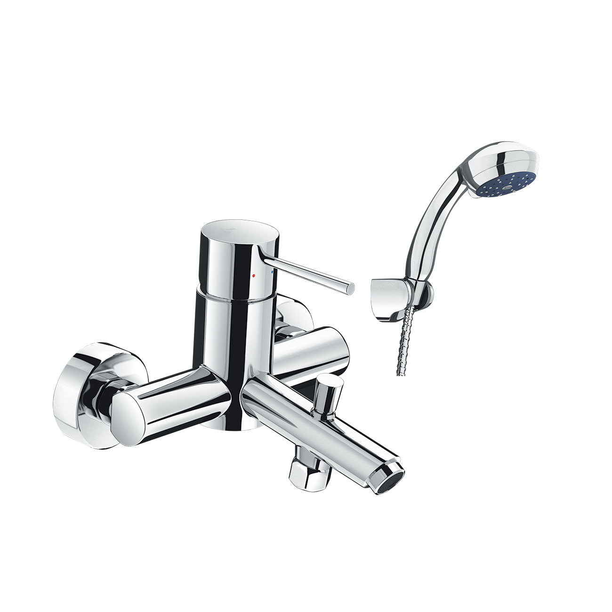
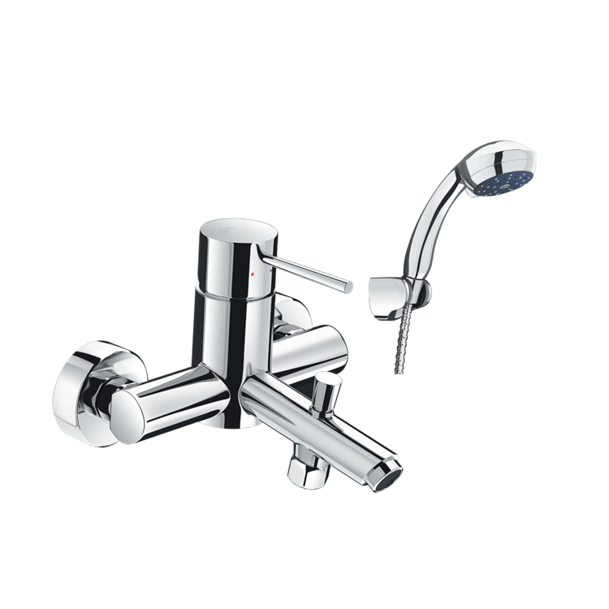
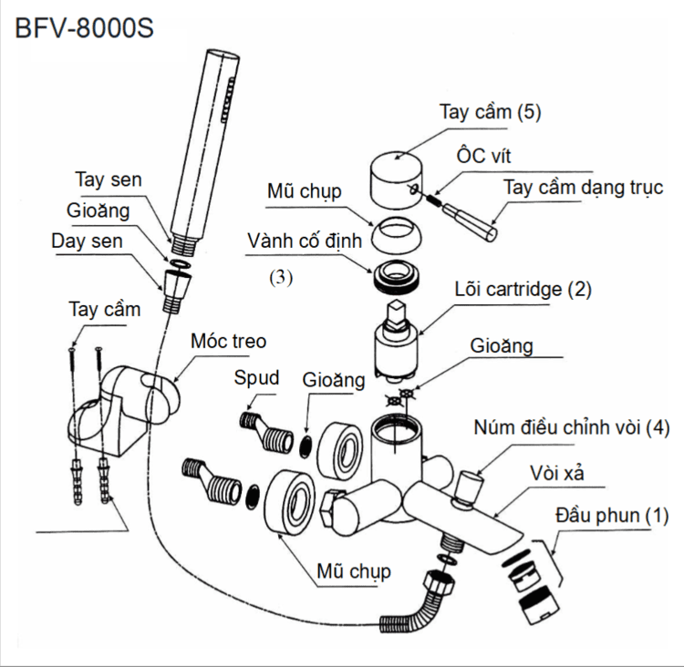

Sen vòi đơn BFV-8000S-1C đến từ thương hiệu thiết bị vệ sinh INAX nổi bật với sự tiện nghi, bền bỉ và vẻ đẹp hiện đại cho mọi không gian phòng tắm, nhà vệ sinh. Với phong cách thiết kế tối giản và trang nhã, mẫu vòi này không chỉ tối ưu hóa khả năng sử dụng mà còn tạo nên tổng thể hài hòa, tinh tế cho không gian tắm của gia đình bạn.Thiết kế sen vòi đơn BFV-8000S-1CThiết kế tinh tế, gọn gàng, giúp sản phẩm dễ dàng kết hợp với nhiều phong cách nội thất và các loại tay sen khác nhau.Tay gạt nước được thiết kế đặc biệt để mang lại trải nghiệm gạt nhẹ nhàng và trơn tru hơn, giúp người dùng điều chỉnh lưu lượng và nhiệt độ nước chính xác.Mọi chi tiết trên tay sen tắm BFV-8000S-1C đều được tối ưu hóa nhằm đảm bảo sự dễ dàng và tiện lợi tối đa cho người dùng trong suốt quá trình sử dụng.Tay sen massage 1C với trải nghiệm cá nhân hóaSen vòi đơn BFV-8000S-1C đi kèm tay sen 1C hiện đại với 3 chế độ phun khác nhau, cho phép người dùng tùy chỉnh linh hoạt để tận hưởng thời gian tắm thư giãn nhất.Bát sen được thiết kế đặc biệt đảm bảo dòng nước phun ra đều và ổn định, bao phủ khắp cơ thể.Tay sen massage kết hợp với áp lực phun mạnh mẽ giúp tăng cảm giác sảng khoái và hỗ trợ trị liệu nhẹ nhàng cho làn da.Độ bền vượt trội, an toàn cho sức khỏeThân vòi được đúc từ đồng nguyên chất, đảm bảo tuổi thọ lâu dài và kết cấu vững vàng.Bề mặt được hoàn thiện bằng lớp mạ Crom/Nikel đạt tiêu chuẩn khắt khe của Nhật Bản, mang lại vẻ sáng bóng như gương và chống ăn mòn tuyệt vời.Sen tắm được trang bị đĩa Cartridge bền bỉ giúp ngăn chặn rò rỉ và tiết kiệm nước hiệu quả. Đặc biệt, vòi nước có hàm lượng chì thấp, tuyệt đối an toàn cho sức khỏe người sử dụng.Vận hành ổn địnhSen vòi đơn BFV-8000S-1C hoạt động hiệu quả trong dải áp lực nước 0.05 MPa ~ 0.75 MPa, đảm bảo dòng chảy mạnh mẽ cho cả nguồn nước nóng và lạnh.Video giới thiệu sen vòi INAXBản vẽ sen vòi đơn BFV-8000S-1CFile hướng dẫn lắp đặt và sử dụng.Thông số kỹ thuậtChất liệuĐồng thau mạ Crom/NikelLoạiVòi sen tắm nóng lạnhKích thước-Thiết kếTay sen Massage 1C (3 chế độ phun)Thương hiệuINAXTính năng- Đĩa Cartridge bền bỉ, tiết kiệm nước - Cần gạt vận hành trơn tru - Vòi ít chì, an toàn sức khỏeÁp lực nước0.05 MPa - 0.75 MPaKhác- Hotline tư vấn và bảo hành: 18006633
Sen vòi đơn BFV-8000S-1C
Vòi chậu thương hiệu INAX.
Đã cập nhật danh sách yêu thích.
DANH MỤC: Vòi chậu
MÃ SẢN PHẨM: BFV-8000S-1C
DEPTH: mm
HEIGHT: mm
WIDTH: mm
Sen vòi đơn BFV-8000S-1C đến từ thương hiệu thiết bị vệ sinh INAX nổi bật với sự tiện nghi, bền bỉ và vẻ đẹp hiện đại cho mọi không gian phòng tắm, nhà vệ sinh. Với phong cách thiết kế tối giản và trang nhã, mẫu vòi này không chỉ tối ưu hóa khả năng sử dụng mà còn tạo nên tổng thể hài hòa, tinh tế cho không gian tắm của gia đình bạn.Thiết kế sen vòi đơn BFV-8000S-1CThiết kế tinh tế, gọn gàng, giúp sản phẩm dễ dàng kết hợp với nhiều phong cách nội thất và các loại tay sen khác nhau.Tay gạt nước được thiết kế đặc biệt để mang lại trải nghiệm gạt nhẹ nhàng và trơn tru hơn, giúp người dùng điều chỉnh lưu lượng và nhiệt độ nước chính xác.Mọi chi tiết trên tay sen tắm BFV-8000S-1C đều được tối ưu hóa nhằm đảm bảo sự dễ dàng và tiện lợi tối đa cho người dùng trong suốt quá trình sử dụng.Tay sen massage 1C với trải nghiệm cá nhân hóaSen vòi đơn BFV-8000S-1C đi kèm tay sen 1C hiện đại với 3 chế độ phun khác nhau, cho phép người dùng tùy chỉnh linh hoạt để tận hưởng thời gian tắm thư giãn nhất.Bát sen được thiết kế đặc biệt đảm bảo dòng nước phun ra đều và ổn định, bao phủ khắp cơ thể.Tay sen massage kết hợp với áp lực phun mạnh mẽ giúp tăng cảm giác sảng khoái và hỗ trợ trị liệu nhẹ nhàng cho làn da.Độ bền vượt trội, an toàn cho sức khỏeThân vòi được đúc từ đồng nguyên chất, đảm bảo tuổi thọ lâu dài và kết cấu vững vàng.Bề mặt được hoàn thiện bằng lớp mạ Crom/Nikel đạt tiêu chuẩn khắt khe của Nhật Bản, mang lại vẻ sáng bóng như gương và chống ăn mòn tuyệt vời.Sen tắm được trang bị đĩa Cartridge bền bỉ giúp ngăn chặn rò rỉ và tiết kiệm nước hiệu quả. Đặc biệt, vòi nước có hàm lượng chì thấp, tuyệt đối an toàn cho sức khỏe người sử dụng.Vận hành ổn địnhSen vòi đơn BFV-8000S-1C hoạt động hiệu quả trong dải áp lực nước 0.05 MPa ~ 0.75 MPa, đảm bảo dòng chảy mạnh mẽ cho cả nguồn nước nóng và lạnh.Video giới thiệu sen vòi INAXBản vẽ sen vòi đơn BFV-8000S-1CFile hướng dẫn lắp đặt và sử dụng.Thông số kỹ thuậtChất liệuĐồng thau mạ Crom/NikelLoạiVòi sen tắm nóng lạnhKích thước-Thiết kếTay sen Massage 1C (3 chế độ phun)Thương hiệuINAXTính năng- Đĩa Cartridge bền bỉ, tiết kiệm nước - Cần gạt vận hành trơn tru - Vòi ít chì, an toàn sức khỏeÁp lực nước0.05 MPa - 0.75 MPaKhác- Hotline tư vấn và bảo hành: 18006633
DANH MỤC: Vòi chậu
MÃ SẢN PHẨM: BFV-8000S-1C
DEPTH: mm
HEIGHT: mm
WIDTH: mm